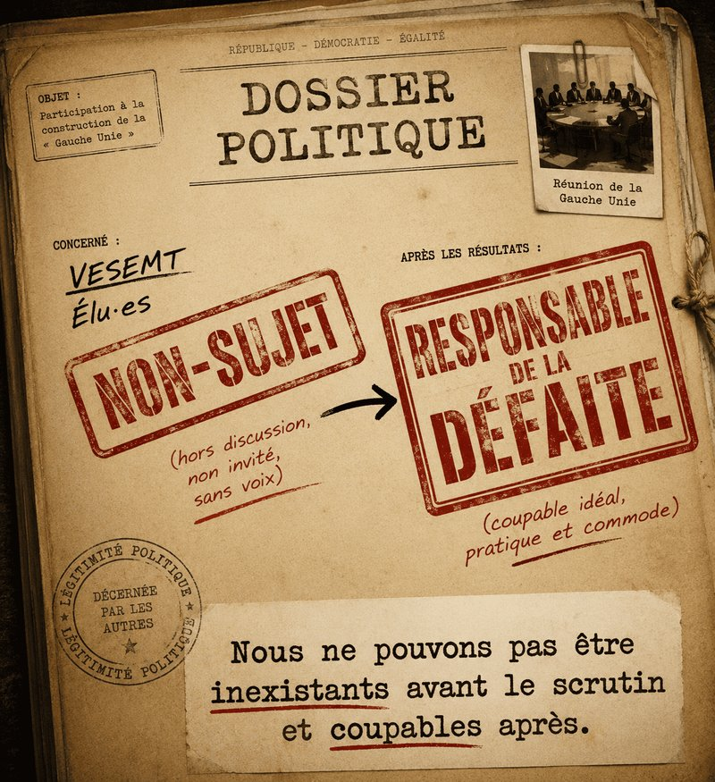

Depuis le second tour, nous assistons à un phénomène assez singulier. Certains trouvent notre position « déplorable » et nous condamnent avec conviction. D’autres s’étonnent sincèrement que VESEMT n’ait pas participé à la fameuse « Gauche Unie », malgré des statuts qui donnent à voir une orientation claire
Les premiers nous reprochent de ne pas avoir soutenu.
Les seconds se demandent pourquoi nous n’avons pas participé.
La réponse aux deux questions est pourtant exactement la même.
Nous n’étions pas invités.
Le Président de notre association politique a participé à trois réunions publiques liées à cette dynamique politique, dont deux avant même l’ouverture officielle de la campagne municipale
À aucun moment il ne nous a été demandé quoi que ce soit publiquement, ni ailleurs
-
Pas une proposition.
-
Pas une discussion de fond.
-
Pas une sollicitation.
-
Pas même un échange sur les conditions d’un éventuel soutien.
Et entre les deux tours ?
-
Rien.
-
Le silence.
-
Le vide.
Mais une fois les résultats connus, certains découvrent soudainement que notre soutien leur aurait été précieux.
C’est une conception originale de l’unité
VESEMT n’a jamais été associé à la construction de cette prétendue union.
Ce n’est pas un ressenti.
Ce n’est pas une interprétation.
C’est un fait.
Le mail politique u 14 février 2024 que nous pouvons rendre public est d’ailleurs particulièrement éclairant. On y apprend que la présence de nos deux élu·es constituait un « non-sujet » et qu’aucun des groupes présents, à l’exception d’AGT, n’en voulait.
« Non-sujet » : L’expression mérite qu’on s’y arrête, surtout au cœur d’un mail dont nous ne sommes pas destinataires.
Car enfin, comment peut-on être un « non-sujet » lorsqu’il s’agit de participer aux discussions et devenir soudainement un sujet majeur lorsqu’il faut expliquer une défaite électorale ?
Nous étions donc suffisamment insignifiants pour ne pas être associés aux discussions. Mais suffisamment importants pour devenir responsables de la défaite.
Il faudrait choisir.
-
Soit nous comptons.
-
Soit nous ne comptons pas.
Mais pas les deux selon les besoins du moment.
Nous ne pouvons pas être inexistants avant le scrutin et coupables après.
Cette contradiction résume à elle seule l’ensemble de la polémique.
Dans cette affaire, nous avons découvert une théorie politique révolutionnaire : quand on gagne, c’est grâce à sa stratégie ; quand on perd, c’est à cause de gens qui n’étaient ni invités aux réunions, ni associés aux décisions, ni sollicités entre les deux tours.
À ce niveau-là, ce n’est plus une analyse électorale : C’est du paranormal.
Mais puisqu’il est question d’analyse, parlons justement de ce qui semble avoir disparu du débat : l’autocritique.
Dans sa dernière communication, le PCF explique essentiellement la défaite par la faiblesse de la participation électorale. Reconnaissons lui le mérite d’être le seul à avoir oser un écrit.
L’abstention est évidemment un sujet sérieux. Personne ne le conteste.
Mais réduire une défaite électorale à ce seul facteur revient à contourner la question essentielle : qu’est-ce qui, dans le projet, dans la campagne ou dans le bilan de mandat , n’a pas convaincu suffisamment d’électrices et d’électeurs ?
La facilité consiste à chercher des responsables à l’extérieur. La rigueur consiste à commencer par se regarder dans un miroir
.
À notre connaissance,
-
Aucun véritable bilan politique du mandat précédent n’a été présenté aux habitants avant cette campagne.
-
Aucune réflexion publique approfondie sur les réussites.
-
Aucune sur les échecs.
-
Aucune sur les choix qui auraient pu être différents.
-
Aucune sur cette union qui a produit l’echec attendu par certainEs de bon sens
Pourtant, comment prétendre construire l’avenir lorsqu’on refuse d’interroger le passé ?
Comment comprendre une défaite sans analyser son propre parcours ?
La question mérite au moins autant d’attention que la recherche de coupables.
Car oui, certains ont préféré désigner coupables nos Elus du Précédent mandat. L’argument est désormais connu : ils auraient été élus en 2020 sur une liste classée à droite.
Très bien.
Mais alors à partir de quel moment les actes commencent-ils à compter ?
-
Parce qu’un mandat ne se résume pas à une photographie prise le soir d’une élection.
-
C’est six années de travail.
-
Six années de votes.
-
Six années de prises de position.
-
Six années d’engagements publics.
-
Le bilan de mandat de nos deux élu·es est public.
-
Chacun peut le consulter. Sur notre site
Si l’on juge les élu·es à leurs actes, le débat est rapidement clos.
Leur action a constamment porté sur la justice sociale, la démocratie locale, les services publics, les discriminations et la défense des habitants.
Prétendre qu’un positionnement politique serait figé pour l’éternité par la composition d’une liste six ans auparavant relève davantage du procès d’intention que de l’analyse politique.
Plus étonnant encore est la tentative de faire porter à ces deux élu·es la responsabilité de la victoire d’Emmanuel François en 2020.
Tout le monde sait que cette élection s’est jouée dans une quadrangulaire où trois listes se revendiquaient de la gauche : Trois listes, trois projets et comme en 2026 pas celui qui emporte la majorité des voix.
Réécrire pendant 6 ans cette réalité pour désigner deux responsables providentiels est pour le moins commode. Mais ce n’est pas sérieux.
Pendant ce temps, VESEMT continue à réclamer ce qu’une démocratie locale devrait pourtant considérer comme normal : le débat public.
-
Nous avons dès avril 2022 proposer de se rencontrer pour construire dans l’unité l’avenir à gauche de Saint-Pierre-des-Corps(Tribune Clarté)
-
Nous avons proposé au PS un débat sur la situation politique locale.
-
Nous avons proposé un débat contradictoire concernant l’exclusion de nos 2 Elus à la France insoumise.
Elles sont restées sans suite faute d’interlocuteurs
Pendant la période électorale nous avons continué nos activités
-
Nous avons publié des analyses.
-
Des propositions.
-
Des prises de position.
-
Et que disent-elles ?
-
Elles disent une chose simple.
Entre les différentes offres politiques qui prétendent incarner la gauche locale, nous cherchons encore une gauche programmatique.
-
Une gauche qui débat des idées plutôt que des appartenances.
-
Une gauche qui parle des quartiers populaires autrement qu’à l’approche des élections.
-
Une gauche qui accepte la contradiction.
-
Une gauche qui construit avec les habitants.
-
Une gauche qui préfère convaincre plutôt qu’excommunier.
Alors pourquoi VESEMT n’a-t-il pas appelé à voter pour la « Gauche Unie » ?
-
Parce qu’on ne soutient pas un projet auquel on n’a jamais été associé.
-
Parce qu’on ne peut pas demander à un mouvement citoyen indépendant de cautionner un accord dont il a été exclu.
-
Parce qu’on ne valide pas une construction politique qui vous exclut de sa conception tout en réclamant ensuite votre caution.
-
Parce que nos statuts, notre histoire et nos principes nous imposent la cohérence.
-
Parce que le respect est une rue à double sens.
-
Parce que ce soutien de « non-sujet », s’il avait été accepté nous impliquait
VESEMT continuera donc à défendre ses valeurs, son indépendance et les habitants qui nous accordent leur confiance,
-
Nous continuerons à défendre le débat démocratique, pour une dynamique unitaire de projet (et pas de logos seulement). y compris lorsqu’il dérange.
-
Nous continuerons à proposer des espaces de discussion là où d’autres préfèrent distribuer des brevets de légitimité.
Et si demain un véritable projet unitaire voit le jour à Saint-Pierre-des-Corps et sur la Métropole, fondée sur le respect mutuel, le débat démocratique et un projet partagé, nous serons toujours disponibles, après avoir dressé le bilan de la séquence en le rendant public pour en discuter.
Après tout, nous n’avons jamais pendant 6 ans refusé le dialogue.
Mais pour construire une union, il existe généralement une première étape: Inviter les gens autour de la table.
Commentaires